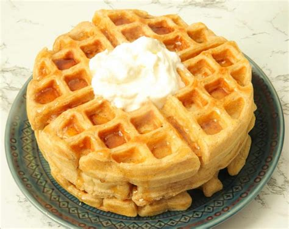

Classic Waffles

Description
A lovely, crispy waffle perfect for the morning.
Ingredients
Serves 5
- 2 cups all-purpose flour
- 1 teaspoon salt
- 4 teaspoons baking powder
- 2 tablespoons white sugar
- 2 eggs
- 1 ½ cups warm milk
- ⅓ cup butter, melted
- 1 teaspoon vanilla extract
Steps
- Preheat waffle iron to desired temperature.
- In a large bowl, mix together flour, salt, baking powder and sugar; set aside.
- In a separate bowl, beat the eggs. Stir in the milk, butter and vanilla.
- Pour the milk mixture into the flour mixture; beat until blended.
- Ladle the batter into a preheated waffle iron. Cook the waffles until golden and crisp. Serve immediately.